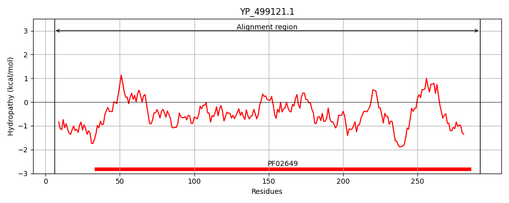
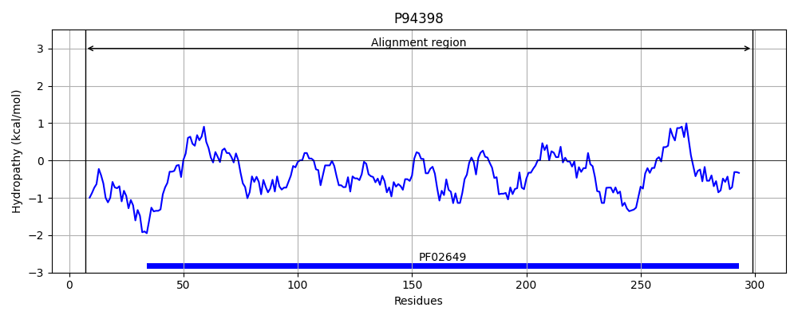
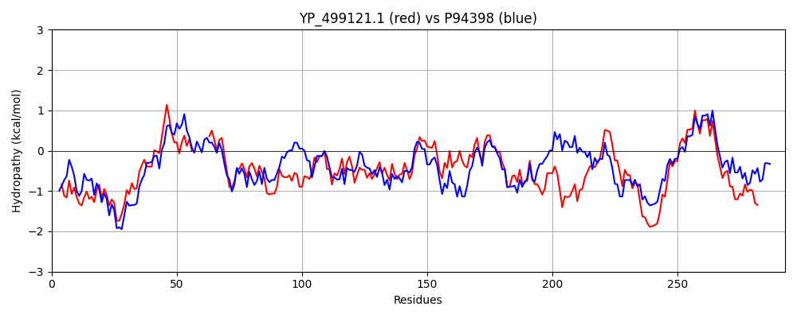

Hit Accession: P94398
Hit TCID: 9.B.10.1.1
Hit Description: gnl|BL_ORD_ID|11706 gnl|TC-DB|P94398|9.B.10.1.1 UPF0343 protein yciA OS=Bacillus subtilis GN=yciA PE=2 SV=1
Mach Len: 293
e:0.000000
Query TMS Count : 0
Hit TMS Count: 0
TMS-Overlap Score: 0.000000
Predicted Substrates:CHEBI:10113;zinc(2+)
BLAST Alignment:
Score: 706 , Bit scores: 276 bits, E-value: 9.8e-93, Alignment length: 293, Percentage identity: 48
Query: 6 LSTREGRWKHFGSVDPIEGTKPTTKNEMTDLQSTHKDFLFEIEEVGIKNLVYPVLVD------QYQTAGTFSFSTSLTKDEKGINMSRIIESVEKHYDNGIELEFNTLYQVLRTLQTNMKQNAAGVDVSGKWFFDRYSPTTNIKAVGNADVTYGLAIDGDKVTRKELTIEATVTTLCPCSKEISEYSAHNQRGVVTVKTYINKDQDIVDDYKNKILDAMEANASSILYPILKRPDEKRVTERAYENPRFVEDLIRLIAADLVEFDWLDGFDIECRNEESIHQHDAFAKLKYRK 292
L + R ++FGSV PI+G KP K +M DLQ+ KD+ F+I+ VG+ N+ +PV + + TA F+ + +L +++KGINMSR+ E ++ ++ NG L F++L Q + L NM ++A V+V WFF+R SP + +AD+ + D+ ++ I A VTTLCPCSKEISEYSAHNQRG V++ I+ + D K +L A E+NAS+ L+P+LKRPDEK VTE AYENPRFVEDL RLIAADL E +W+ F+IECRNEESIH HDA+AKL + K
Sbjct: 7 LPKKTERLQYFGSVSPIKGEKPVEKEKMKDLQNIRKDYFFDIQHVGVANVSHPVTITSAMMPAEQTTAANFTMTCNLPRNQKGINMSRLTELLQVYHQNGWILSFSSLQQFTKELAENMDTSSATVEVRFPWFFERKSPKLEKAGLMHADIFMSVTYRKDQPFKQRAGISAKVTTLCPCSKEISEYSAHNQRGTVSIWADIHPAASLPSDVKADLLHAAESNASARLHPVLKRPDEKAVTETAYENPRFVEDLARLIAADLFELEWVSAFEIECRNEESIHLHDAYAKLCFSK 299 | Protein Hydropathy Plots: |
|---|
|  |  |
Pairwise Alignment-Hydropathy Plot:
|
|---|
|  |